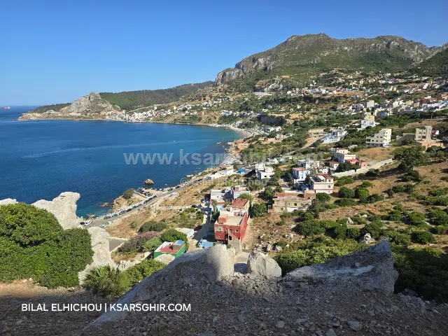
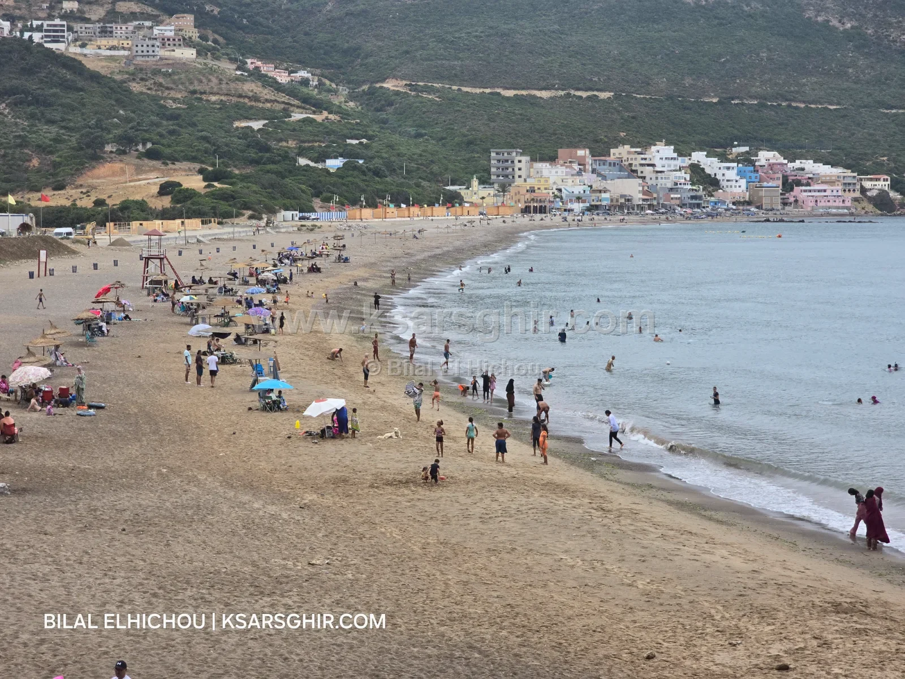

🌿 طبيعة
شاطئ واد المرسى: شاطئ عائلي بامتياز على بعد 12 كم من القصر الصغير، تيارات ضعيفة، حراسة من يونيو إلى شتنبر، مطاعم ومقاهي وأكشاك موسمية، ومراكب الصيادين على الرمل.

شاطئ عائلي بامتياز على بعد 12 كم من القصر الصغير و2 كم عن الطريق الرئيسية. تيارات ضعيفة، حراسة من يونيو إلى شتنبر، مطاعم ومقاهي وأكشاك موسمية، ومراكب الصيادين مصطفة على الشاطئ. مكان هادئ، بعيد عن ضجيج الطريق.
يقع شاطئ واد المرسى شرق القصر الصغير، على بعد حوالي 12 كم، بين الدالية وبليونش. ويبعد الشاطئ حوالي 2 كم عن الطريق الرئيسية، وهذا ما يمنحه هدوءه: لا تصله أصوات السيارات، ويحس الزائر أنه في مكان بعيد رغم قربه. وهو تابع إدارياً لـجماعة تغرامت بإقليم الفحص أنجرة.
الشاطئ محاط بالتلال الخضراء، ويطل على مضيق جبل طارق وحركة البواخر فيه، في منظر يجمع بين الجبل والبحر.
يتكون الشاطئ من الحصى، وهو ما يجعل الماء صافياً قرب الشاطئ. وما يجعله شاطئاً عائلياً بامتياز هو هدوؤه، وأجواؤه البسيطة، وتيارات المضيق الضعيفة فيه.
ورغم ضعف التيارات، يبقى الانتباه ضرورياً: اسبح في الأماكن المسموح بها وتحت أنظار الوقاية المدنية. وكباقي شواطئ المنطقة، تكبر الأمواج قليلاً مع الغربي، والسباحة غير منصوح بها في الشتاء. قبل الخروج اطلع على البحر اليوم.
من أجمل ما في واد المرسى مراكب الصيد التقليدية المصطفة على الشاطئ. الصيادون جزء من حياة المكان، ومشهد المراكب الملونة على الحصى مع البحر في الخلفية من أجمل اللقطات للتصوير، خاصة في الصباح الباكر.
الطريق النازلة من الطريق الرئيسية نحو الشاطئ، على حوالي 2 كم، تمر بين التلال، وتصل في النهاية إلى خليج صغير هادئ. في الربيع تكون التلال خضراء، وفي الصيف يلتقي فيها لون البحر الأزرق بالحصى والمراكب الملونة، في منظر يحبه زوار المنطقة.
واد المرسى من الشواطئ التي تختارها العائلات للهدوء: بعيد عن الطريق، بتيارات ضعيفة، وبمطاعم ومقاهي قريبة. ولكي يمر اليوم بسلام:
في الصيف، الصباح الباكر هو أجمل وقت: الشاطئ هادئ، ومراكب الصيادين عائدة من البحر. ويونيو وشتنبر أهدأ من غشت مع وجود الحراسة.
شرق القصر الصغير بحوالي 12 كم، بين الدالية وبليونش، على بعد 2 كم من الطريق الرئيسية. وهو تابع لجماعة تغرامت.
نعم، هو شاطئ عائلي بامتياز: هادئ، بتيارات ضعيفة، ومطاعم ومقاهي قريبة.
الشاطئ من الحصى، لذلك يُنصح بأحذية الماء.
نعم، من يونيو إلى شتنبر.
نعم، مطاعم ومقاهي قريبة، وأكشاك موسمية في الصيف.
الشبكة ضعيفة في الشاطئ، فرتب أمورك قبل الوصول.